Hệ thống phân luồng Mail công vụ — Phòng GDPT-GDTX, Sở GD&ĐT Đồng Nai
Tài liệu này mô tả hệ thống làm việc như thế nào ở mức kỹ thuật: dữ liệu đi từ đâu tới đâu, mỗi bước quyết định điều gì, và vì sao lại thiết kế như vậy. Người đọc nhắm tới là cán bộ phụ trách công nghệ thông tin, người tiếp nhận bàn giao, hoặc người cần sửa đổi mã nguồn.
Hệ thống gồm hai phần chạy trên hai máy khác nhau, gặp nhau ở một cơ sở dữ liệu MySQL chung.
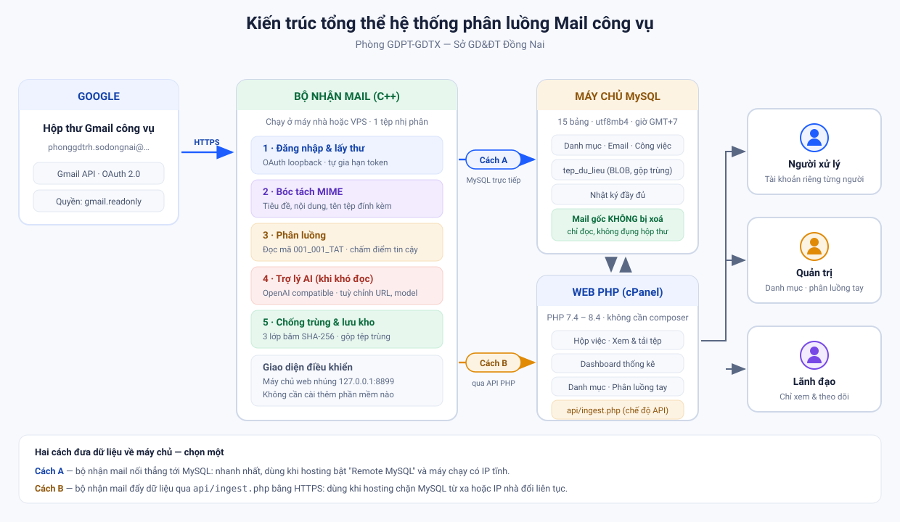
| Thành phần | Ngôn ngữ | Chạy ở đâu | Nhiệm vụ |
|---|---|---|---|
| Bộ nhận mail | C++17 | Máy nhà hoặc VPS | Đọc Gmail, bóc tách, phân luồng, ghi vào CSDL |
| Phần web | PHP 7.4–8.4 | Shared hosting cPanel | Người xử lý xem việc, quản trị điều hành, thống kê |
| Cơ sở dữ liệu | MySQL / MariaDB | Cùng máy chủ cPanel | Chứa toàn bộ dữ liệu, kể cả tệp đính kèm dạng BLOB |
Ba nguyên tắc chi phối toàn bộ thiết kế:
Một là, không phụ thuộc thư viện ngoài. Bộ nhận mail viết bằng C++ thuần, tự cài đặt lấy mọi thứ cần dùng: bộ phân tích JSON, mã hoá base64, hàm băm SHA-1 và SHA-256, giao thức MySQL ở mức gói tin, và một máy chủ HTTP nhỏ để làm giao diện. Nhờ vậy sản phẩm là một tệp nhị phân duy nhất, chép sang máy khác là chạy, không cài đặt gì thêm, không lo xung đột phiên bản thư viện. Phần web cũng vậy: PHP thuần, không dùng composer, không framework.
Hai là, thư gốc không bao giờ bị đụng tới. Hệ thống xin quyền gmail.readonly — quyền chỉ đọc. Google sẽ từ chối mọi lệnh xoá hay sửa nhãn kể cả khi mã nguồn có lỗi. Hộp thư công vụ vẫn nguyên vẹn để đối chiếu về sau.
Ba là, mọi việc đều ghi nhật ký. Từ lúc kết nối máy chủ, đọc từng bức thư, đến lúc một cán bộ bấm nút "Đã xử lý" — đều có dòng nhật ký ghi lại thời điểm, nguồn, và người thực hiện.
001_001_TATĐây là hạt nhân của toàn bộ hệ thống. Trường gửi báo cáo đặt tên tệp đính kèm (hoặc tiêu đề thư) theo đúng quy ước ba phần, hệ thống đọc ra và biết ngay phải chuyển cho ai.
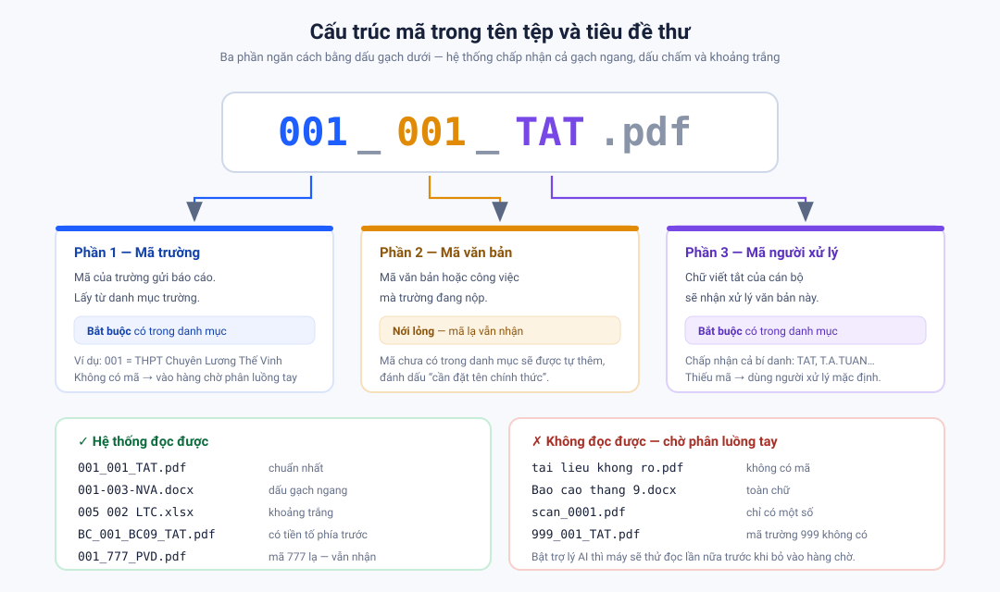
Ba phần được đối xử khác nhau một cách có chủ ý:
| Phần | Ý nghĩa | Mức chặt chẽ | Xử lý khi thiếu / sai |
|---|---|---|---|
| Thứ nhất | Mã trường | Bắt buộc có trong danh mục | Thử đoán qua email người gửi; không được thì đưa vào hàng chờ |
| Thứ hai | Mã văn bản / công việc | Nới lỏng | Mã lạ vẫn nhận, tự thêm vào danh mục với cờ "cần đặt tên chính thức" |
| Thứ ba | Mã người xử lý | Bắt buộc có trong danh mục | Dùng người xử lý mặc định nếu đã cấu hình |
Phần thứ hai được nới lỏng vì đây là yêu cầu thực tế: đầu năm học phát sinh loại báo cáo mới, văn thư chưa kịp cập nhật danh mục, nhưng các trường đã gửi rồi. Nếu hệ thống từ chối thì mất dữ liệu và mất luôn số liệu thống kê. Cách làm ở đây là vẫn nhận, vẫn đếm, đánh dấu để quản trị đặt tên sau — bảng danh mục sẽ hiện dòng đó với nhãn vàng "Mã tự thêm — cần đặt tên chính thức".
Thứ tự tìm mã. Hệ thống tìm mã theo thứ tự ưu tiên giảm dần, dừng lại ở nguồn đầu tiên cho kết quả đủ tin cậy:
email trong danh mục trường để đoán mã trườngVì bước 1 chạy trên từng tệp, một bức thư kèm ba tệp của ba trường khác nhau sẽ sinh ra ba công việc riêng cho ba người xử lý riêng — đúng như mong muốn.
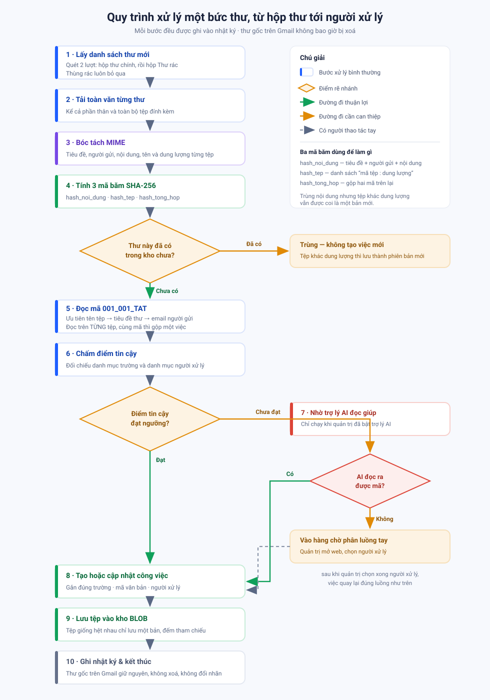
Mỗi phiên đồng bộ, dù chạy theo lịch hay do người dùng bấm nút, đều đi qua đúng mười bước này. Phiên đồng bộ được ghi vào bảng phien_dong_bo với đầy đủ số liệu: bắt đầu lúc nào, kết thúc lúc nào, quét bao nhiêu thư, tạo bao nhiêu việc, gặp bao nhiêu lỗi.
Điểm cần lưu ý ở bước 4 và bước 5: hệ thống tính mã băm và kiểm tra trùng trước khi phân luồng. Làm ngược lại sẽ tốn công gọi AI và tra danh mục cho những bức thư mà cuối cùng bị bỏ qua vì trùng.
Truy vấn Gmail mặc định là has:attachment newer_than:30d — chỉ lấy thư có tệp đính kèm trong vòng 30 ngày. Quản trị đổi được trong mục Phân luồng & đồng bộ của bộ nhận mail. Việc giới hạn 30 ngày giúp phiên đồng bộ đầu tiên không phải tải về toàn bộ lịch sử hộp thư.
Đây là tình huống dễ mất dữ liệu nhất mà lại khó phát hiện: trường có gửi, nhưng Google xếp thư vào Thư rác, cán bộ không thấy, và thống kê báo trường đó "chưa nộp".
Nguyên nhân thường gặp: hàng chục trường gửi thư nội dung gần giống nhau trong cùng một buổi, tệp đính kèm nặng, hoặc trường gửi từ hộp thư miễn phí chưa cấu hình SPF/DKIM.
Gmail API mặc định giấu hẳn thư trong Thư rác và Thùng rác: gọi messages.list bình thường sẽ không thấy chúng, kể cả khi truy vấn khớp. Vì vậy bộ nhận mail quét hai lượt:
| Lượt | Tham số gọi API | Lấy gì |
|---|---|---|
| 1 | q=<truy vấn> | Thư trong hộp thư chính |
| 2 | includeSpamTrash=true và q=<truy vấn> in:spam | Chỉ thư trong hộp Thư rác |
Phải có cả hai tham số ở lượt hai: thiếu includeSpamTrash thì Gmail lọc bỏ thư rác trước khi xét truy vấn, còn thiếu in:spam thì Thùng rác cũng bị kéo vào.
Id trùng giữa hai lượt được loại bỏ, nên thư không bị xử lý hai lần.
Chia hạn mức giữa hai lượt. Thiết lập Số mail mỗi lần quét là hạn mức chung. Hộp thư chính được ưu tiên lấy trước; hộp Thư rác dùng phần còn thừa, nhưng không bao giờ dưới một phần năm hạn mức (tối thiểu 5 thư). Cách chia này tránh hai cực:
Thùng rác thì luôn bị bỏ qua. Ngoài việc giới hạn bằng in:spam, hệ thống còn kiểm tra nhãn TRASH trên từng thư trước khi xử lý — thư người dùng đã chủ động xoá thì không lôi lại.
Thư vớt được từ Thư rác vẫn đi qua đúng quy trình như mọi thư khác, chỉ khác ba điểm:
email.tu_spam được đặt bằng 1;Tắt được bằng thiết lập gmail.quet_spam, nhưng mặc định là bật vì bỏ sót báo cáo tai hại hơn nhiều so với việc thỉnh thoảng nhận nhầm một thư rác thật.
Cách xử lý tận gốc: vớt thư khỏi Thư rác chỉ là chữa cháy. Nên vào Gmail → Cài đặt → Bộ lọc và địa chỉ bị chặn → Tạo bộ lọc mới, điền tên miền của các trường (ví dụ@thpt.edu.vn) rồi tích "Không bao giờ chuyển vào Thư rác". Với Google Workspace, quản trị viên làm ở Admin console → Apps → Gmail → Spam, Phishing and Malware → Allowlist. Hệ thống chỉ có quyền đọc (gmail.readonly) nên không thể tự gỡ nhãn Thư rác giúp.
Đọc được ba cụm ký tự trong tên tệp chưa có nghĩa là đã tìm ra mã. Tên tệp tai lieu khong ro.pdf cũng tách được thành ba cụm tai / lieu / khong. Nếu tin ngay thì danh mục văn bản sẽ đầy rác.
Vì vậy mỗi kết quả đọc được đều phải qua một thang điểm tin cậy từ 0 đến 1:
| Căn cứ | Điểm cộng |
|---|---|
| Điểm nền — tách được ba phần | 0,30 |
| Mã trường khớp danh mục | +0,30 |
| Mã người xử lý khớp danh mục (kể cả bí danh) | +0,30 |
| Mã văn bản khớp danh mục | +0,10 |
| Cả hai mã số đều là chữ số | +0,05 |
| Đúng khuôn chuẩn số _ có-chữ-số _ CHỮ-HOA | +0,20 |
Ngưỡng chấp nhận là 0,55. Dưới ngưỡng, kết quả bị vứt bỏ và bức thư chuyển sang bước nhờ AI hoặc vào hàng chờ phân luồng tay. Quản trị chỉnh được ngưỡng này trong Cài đặt → Trợ lý AI → Ngưỡng tin cậy.
Ngoài ngưỡng còn có một chốt chặn nữa dành riêng cho việc tự thêm mã văn bản. Hệ thống chỉ tự tạo mã văn bản mới khi hội đủ hai điều kiện:
Nhờ hai chốt chặn này, tai lieu khong ro.pdf bị loại (không có căn cứ nào khớp danh mục, và lieu không có chữ số), trong khi 001_BC09_TAT.pdf được nhận và BC09 được tự thêm vào danh mục.
Kết quả phân luồng được ghi vào cột nguon_ma của bảng cong_viec để về sau còn biết mã này lấy từ đâu: ten_tep, tieu_de, nguoi_gui, ai, hay thu_cong.
Đây là phần được yêu cầu kỹ nhất, vì thực tế các trường hay gửi lại: gửi nhầm rồi gửi lại, sửa file rồi gửi lại, hoặc bấm gửi hai lần.
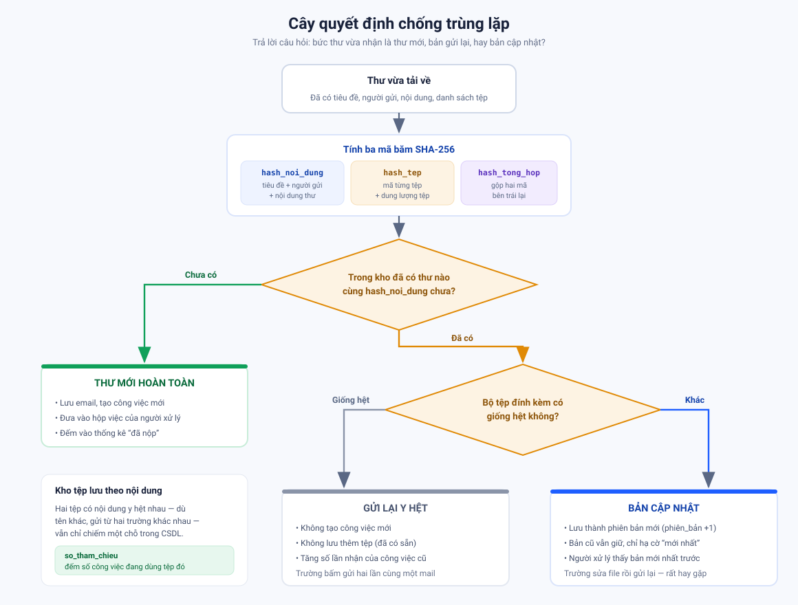
Hệ thống tính ba mã băm SHA-256 cho mỗi bức thư:
| Mã băm | Tính từ | Trả lời câu hỏi |
|---|---|---|
hash_noi_dung | Tiêu đề (đã chuẩn hoá) + người gửi + nội dung thư | Nội dung thư có giống thư cũ không? |
hash_tep | Danh sách mã-băm-tệp : dung-lượng đã sắp xếp | Bộ tệp đính kèm có giống hệt không? |
hash_tong_hop | Gộp hai mã trên | Toàn bộ bức thư có trùng khít không? |
Chuẩn hoá tiêu đề nghĩa là bỏ các tiền tố RE:, FW:, FWD: (danh sách này sửa được trong Cài đặt), gộp khoảng trắng thừa, và chuyển về chữ thường. Nhờ vậy Bao cao thang 9 và RE: Bao cao thang 9 được coi là cùng một nội dung.
Ba mã băm cho phép phân biệt chính xác ba tình huống hoàn toàn khác nhau:
Thư mới hoàn toàn — hash_noi_dung chưa có trong kho. Lưu email, tạo công việc, đưa vào hộp việc, đếm vào thống kê "đã nộp".
Gửi lại y hệt — cả hash_noi_dung lẫn hash_tep đều trùng. Không tạo công việc mới, không lưu thêm tệp; chỉ tăng so_lan_nhan của công việc cũ lên một. Người xử lý không bị làm phiền bởi bản trùng.
Bản cập nhật — hash_noi_dung trùng nhưng hash_tep khác. Đây chính là trường hợp "trùng nội dung nhưng tệp đính kèm khác dung lượng". Hệ thống lưu thành phiên bản mới: phien_ban của bản mới bằng bản cũ cộng một, bản cũ bị hạ cờ la_ban_moi_nhat xuống 0 nhưng vẫn được giữ nguyên. Người xử lý nhìn thấy bản mới nhất trước, và vẫn mở xem được bản cũ khi cần đối chiếu.
Bảng tep_du_lieu là một kho lưu theo nội dung (content-addressed store): khoá là hash_tep được đặt UNIQUE, giá trị là khối LONGBLOB.
Khi lưu một tệp, hệ thống băm nội dung tệp trước. Nếu mã băm đó đã có, nó không ghi thêm byte nào — chỉ tăng so_tham_chieu lên một và trỏ bản ghi tep_dinh_kem mới về khối dữ liệu cũ. Hệ quả rất đáng kể trong thực tế: một công văn của Sở được 12 trường tải về rồi gửi kèm lại trong báo cáo của mình chỉ chiếm một chỗ trong CSDL thay vì 12 chỗ.
Khi xoá, so_tham_chieu giảm dần; khối dữ liệu chỉ thực sự bị xoá khi số này về 0.
Hosting cPanel thường đặt max_allowed_packet khá nhỏ (1–16 MB). Một tệp đính kèm 30 MB không thể ghi bằng một câu lệnh. Bộ nhận mail xử lý bằng cách chèn dòng rỗng trước, rồi nối thêm từng khối:
UPDATE tep_du_lieu SET noi_dung = CONCAT(noi_dung, X'....') WHERE id = ?Kích thước mỗi khối được tính từ max_allowed_packet đọc được của chính máy chủ, trừ hao phần dư cho câu lệnh. Sau khi ghi xong, hệ thống đọc lại độ dài và mã băm để kiểm chứng tệp còn nguyên vẹn trước khi báo thành công.
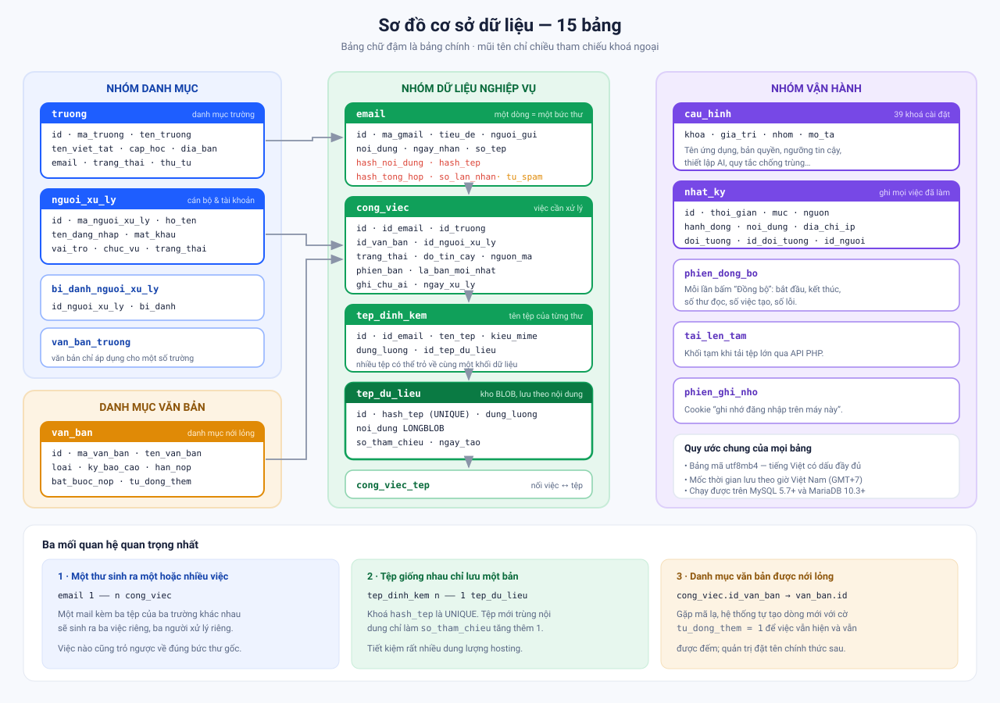
Toàn bộ 15 bảng dùng utf8mb4 / utf8mb4_unicode_ci và ROW_FORMAT=DYNAMIC, tương thích ngược tới MySQL 5.7 và MariaDB 10.3 — mức phổ biến nhất trên shared hosting hiện nay.
Kết nối được đặt SET time_zone = '+07:00' ngay sau khi mở, nên mọi mốc thời gian trong CSDL đều là giờ Việt Nam, không phải giờ máy chủ.
Đây là quyết định được cân nhắc kỹ, vì lưu BLOB trong CSDL thường bị coi là phản mẫu. Lý do chọn cách này:
mysqldump là có đủ dữ liệu lẫn tệp. Không sợ cảnh sao lưu CSDL xong quên mất thư mục uploads/, đến khi phục hồi thì mất hết tệp.hash_tep do chính CSDL bảo đảm, không phụ thuộc vào việc mã ứng dụng có kiểm tra đúng hay không.Đổi lại phải chấp nhận: câu truy vấn lấy danh sách không bao giờ được SELECT * trên bảng có BLOB. Toàn bộ mã nguồn tuân thủ nguyên tắc này — cột noi_dung chỉ được đọc đúng lúc người dùng bấm xem hoặc tải tệp.
email 1 — n cong_viec: một thư sinh ra nhiều việc (mỗi tệp một trường khác nhau)tep_dinh_kem n — 1 tep_du_lieu: nhiều tên tệp trỏ về cùng một khối nội dungcong_viec.id_van_ban → van_ban.id: quan hệ được nới lỏng, mã lạ sinh dòng mới tự động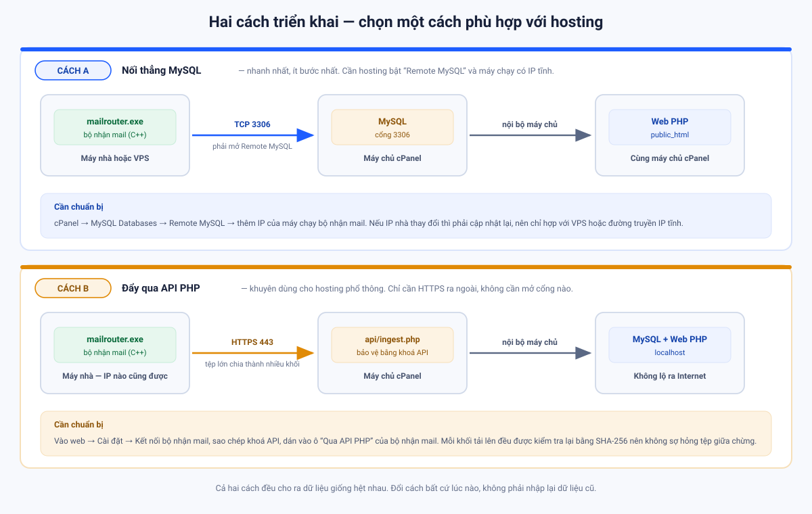
Bộ nhận mail hỗ trợ hai chế độ lưu trữ, chọn trong mục Kết nối máy chủ của giao diện.
Cách A — MySQL trực tiếp. Bộ nhận mail nói chuyện thẳng với MySQL qua cổng 3306 bằng giao thức gói tin tự cài đặt (hỗ trợ cả mysql_native_password và đường nhanh của caching_sha2_password). Nhanh nhất, ít mắt xích nhất. Điều kiện: hosting phải bật Remote MySQL và khai báo IP của máy chạy bộ nhận mail.
Cách B — Qua API PHP. Bộ nhận mail gửi dữ liệu qua HTTPS tới api/ingest.php trên chính hosting. Tệp lớn được chia thành nhiều khối base64, mỗi khối được kiểm lại bằng SHA-256 ở phía máy chủ. Cách này được khuyên dùng cho hosting phổ thông: không cần mở cổng nào, IP nhà thay đổi cũng không sao, và MySQL không phải phơi ra Internet.
Hai cách cho ra dữ liệu giống hệt nhau. Đổi qua lại bất cứ lúc nào mà không phải nhập lại dữ liệu cũ.
Chế độ B được bảo vệ bằng một khoá API sinh ngẫu nhiên, xem trong Cài đặt → Kết nối bộ nhận mail của trang web. Mỗi yêu cầu tải lên đều phải kèm khoá này. Đổi khoá bất cứ lúc nào, chỉ cần dán lại vào bộ nhận mail.
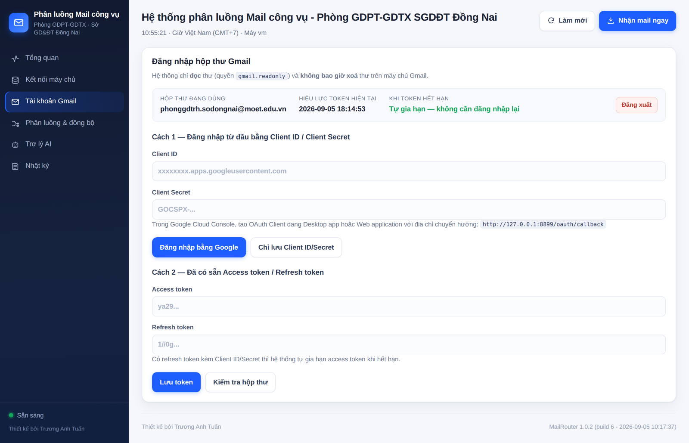
Hệ thống hỗ trợ hai cách đăng nhập:
Cách 1 — Từ đầu bằng Client ID và Client Secret. Người dùng dán hai giá trị lấy từ Google Cloud Console, bấm Đăng nhập Google. Bộ nhận mail mở trình duyệt tới trang cấp quyền của Google, đồng thời lắng nghe ở http://127.0.0.1:8899/oauth/callback (luồng loopback dành cho ứng dụng cài đặt trên máy). Google trả về mã, bộ nhận mail đổi lấy access_token và refresh_token.
Cách 2 — Dán sẵn token. Nếu đã có access_token và refresh_token từ nơi khác, dán thẳng vào là dùng được ngay, không cần Client ID.
Không, miễn là có refresh_token. Access token của Google chỉ sống khoảng một giờ, nhưng refresh token thì lâu dài. Trước mỗi lần gọi API, bộ nhận mail kiểm tra:
token còn hạn (trừ hao 120 giây)? → dùng luôn
không còn hạn nhưng có refresh? → tự đổi lấy token mới, ghi vào tệp cấu hình
không có refresh, chỉ có access? → dùng tới khi Google từ chốiNgoài ra còn một lớp bảo vệ nữa: nếu Gmail trả về lỗi 401 giữa chừng, hệ thống tự làm mới token rồi thử lại đúng yêu cầu đó một lần trước khi báo lỗi.
Giao diện hiển thị rõ tình trạng này ở dòng Gia hạn: chữ xanh "Tự gia hạn — không cần đăng nhập lại" khi có refresh token, chữ đỏ "Phải đăng nhập lại (thiếu refresh token)" khi chỉ có access token.
Chi tiết cách lấy Client ID xem docs/GMAIL-OAUTH.md.
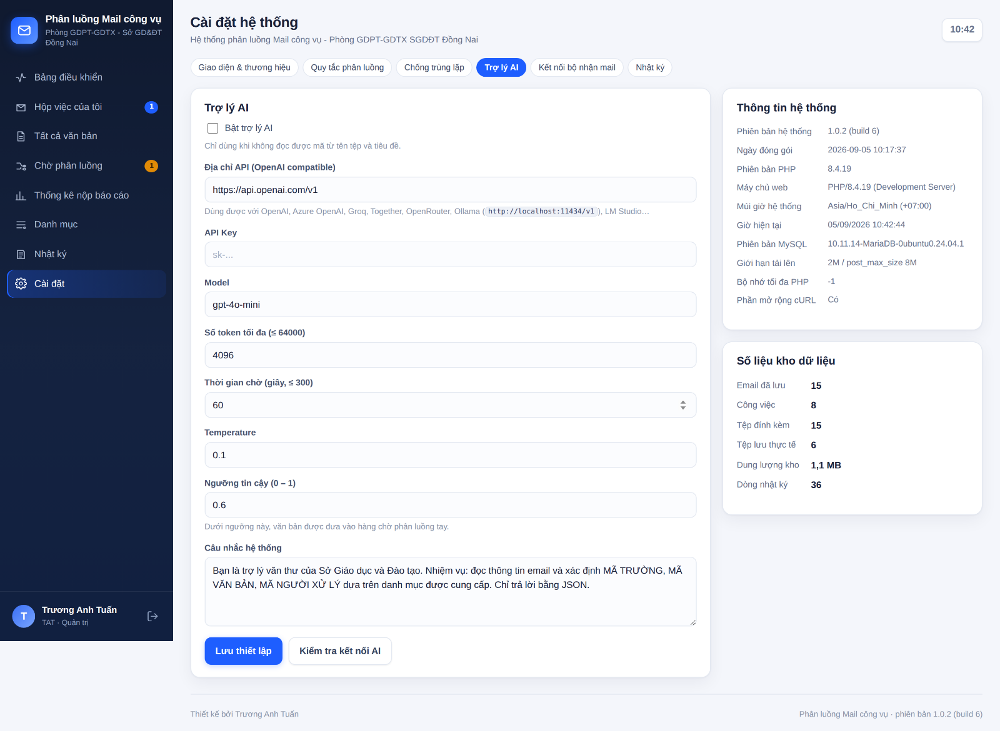
Trợ lý AI chỉ chạy khi cách đọc thông thường thất bại — nghĩa là điểm tin cậy dưới ngưỡng. Đây là lựa chọn có chủ ý: đại đa số thư đặt tên đúng quy ước, gọi AI cho mọi thư vừa chậm vừa tốn tiền mà không thêm được gì.
Hệ thống dùng giao thức OpenAI compatible, nên chạy được với OpenAI, Azure OpenAI, Groq, Together, OpenRouter, và cả mô hình chạy tại chỗ qua Ollama hay LM Studio. Tất cả thông số đều tuỳ chỉnh:
| Thông số | Giới hạn | Ghi chú |
|---|---|---|
| Địa chỉ API | — | Ví dụ https://api.openai.com/v1 hoặc http://localhost:11434/v1 |
| Model | — | Ví dụ gpt-4o-mini |
| Số token tối đa | ≤ 64000 | |
| Thời gian chờ | ≤ 300 giây | |
| Temperature | 0 – 2 | Nên để thấp (0,1) cho tác vụ trích xuất |
| Ngưỡng tin cậy | 0 – 1 | Dưới ngưỡng thì vào hàng chờ phân luồng tay |
Câu nhắc hệ thống cũng sửa được. Mặc định, AI được đưa danh mục trường và danh mục người xử lý làm ngữ cảnh, và được yêu cầu chỉ trả lời bằng JSON. Kết quả AI đưa ra vẫn phải qua đúng thang điểm tin cậy như mọi nguồn khác — AI không có đặc quyền bỏ qua kiểm tra.
Lý do AI phán đoán được ghi vào cột ghi_chu_ai và hiện lên trang phân luồng tay, để quản trị nhìn thấy AI đã "nghĩ" gì trước khi quyết định.
Không bật AI thì hệ thống vẫn chạy đầy đủ, chỉ là những thư khó đọc sẽ vào thẳng hàng chờ phân luồng tay.
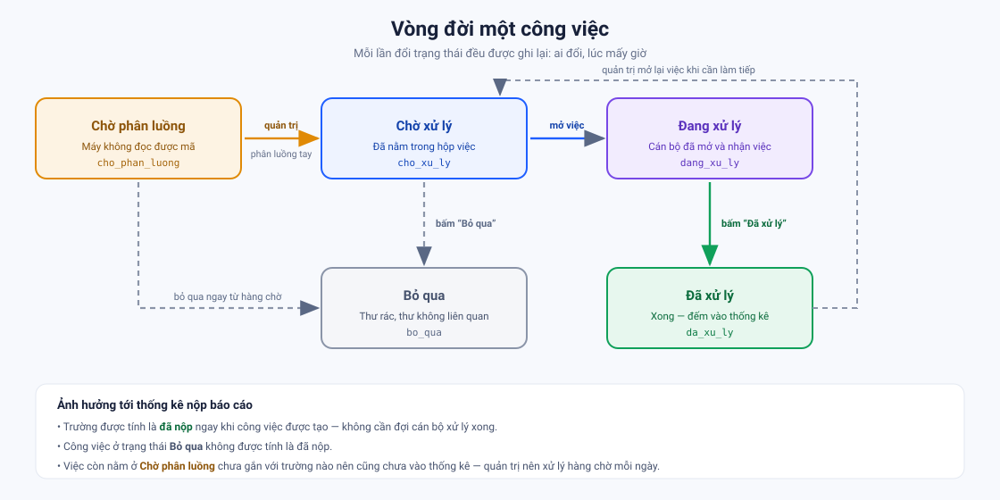
Điểm dễ nhầm: trường được tính là "đã nộp" ngay khi công việc được tạo, không phải đợi cán bộ xử lý xong. Thống kê trả lời câu hỏi "trường nào đã gửi báo cáo?", chứ không phải "cán bộ đã làm xong chưa?".
Hệ quả cần lưu ý: những việc còn nằm ở Chờ phân luồng chưa gắn với trường nào nên chưa vào thống kê. Vì vậy quản trị nên dọn hàng chờ mỗi ngày, nếu không số liệu "chưa nộp" sẽ cao hơn thực tế.
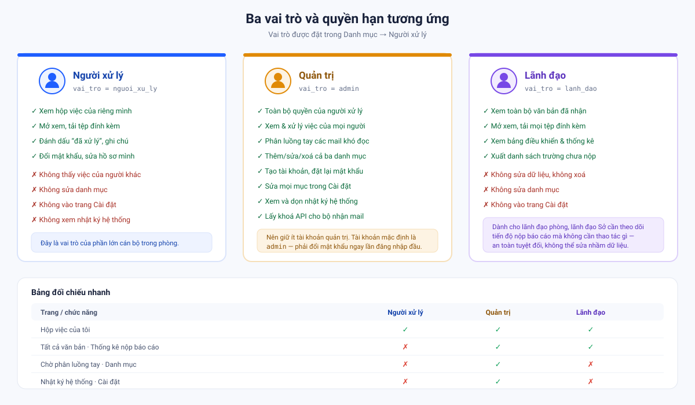
Phân quyền được kiểm tra ở phía máy chủ trong bộ điều khiển, không phải bằng cách ẩn nút trên giao diện. Người dùng gõ thẳng địa chỉ của một trang không được phép sẽ nhận thông báo từ chối, chứ không vào được.
Riêng người xử lý còn bị giới hạn thêm ở mức truy vấn: câu lệnh lấy danh sách việc luôn kèm điều kiện id_nguoi_xu_ly = <id của chính người đang đăng nhập>, nên không có đường nào để xem trộm việc của người khác.
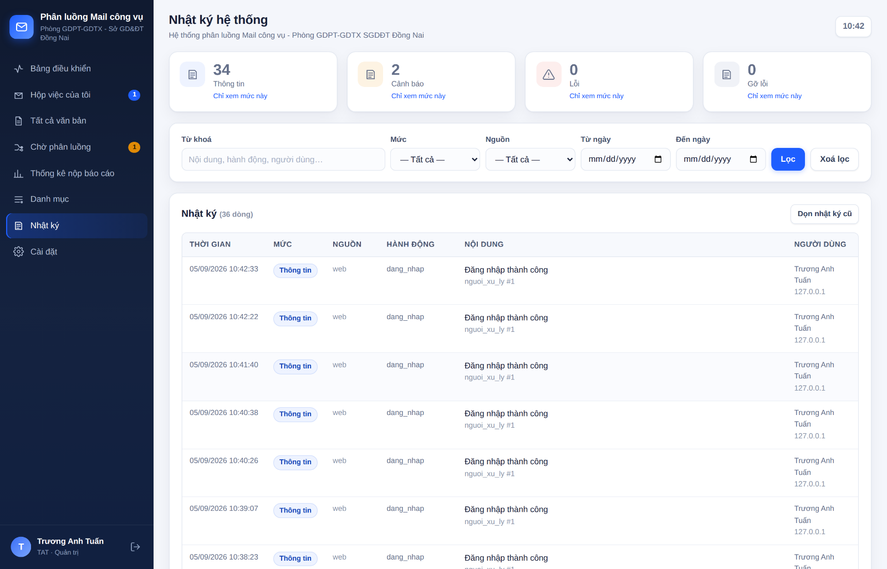
Bảng nhat_ky ghi lại mọi hoạt động với bốn mức: Gỡ lỗi, Thông tin, Cảnh báo, Lỗi. Mỗi dòng có thời gian (giờ Việt Nam), nguồn (web / mailrouter / api), hành động, nội dung, địa chỉ IP, và người thực hiện nếu có.
Quản trị lọc theo mức, theo nguồn, theo khoảng ngày, hoặc tìm theo từ khoá. Mức ghi tối thiểu đặt trong Cài đặt → Nhật ký; chọn Gỡ lỗi khi cần dò tìm sự cố, còn bình thường để Thông tin cho gọn.
Nhật ký cũ hơn số ngày cấu hình sẽ bị xoá khi bấm Dọn nhật ký cũ. Đặt 0 để giữ mãi.
Bộ nhận mail còn ghi thêm nhật ký ra tệp trong thư mục nhat_ky/ cạnh tệp chạy, hữu ích khi chưa kết nối được CSDL — chính lúc cần xem nhật ký nhất.
Giao diện của bộ nhận mail là một trang web nhúng. Thay vì dùng Qt hay wxWidgets (kéo theo hàng chục megabyte thư viện), bộ nhận mail chạy một máy chủ HTTP nhỏ ở 127.0.0.1:8899 và phục vụ HTML/CSS/JS đã được nhúng thẳng vào tệp nhị phân lúc biên dịch. Người dùng mở trình duyệt là thấy giao diện. Được ba cái lợi: giao diện đẹp và hiện đại mà không tốn dung lượng, mã giao diện dùng chung cách viết với phần web, và có thể điều khiển từ xa qua SSH tunnel khi cần.
Máy chủ này chỉ lắng nghe ở 127.0.0.1, không lộ ra mạng.
Chấm điểm tin cậy thay vì so khớp cứng. Bản đầu tiên chỉ tách chuỗi rồi tin ngay, kết quả là tai lieu khong ro.pdf bị đọc thành mã văn bản lieu và làm bẩn danh mục. Thang điểm cùng ngưỡng 0,55 là cách xử lý gọn cho vấn đề này mà vẫn giữ được sự linh hoạt của danh mục nới lỏng.
Số phiên bản tự tăng. Hai tệp VERSION và BUILD ở gốc kho mã là nguồn duy nhất; kịch bản scripts/phien-ban.sh sinh ra cpp/include/phien_ban.h và php/app/phien_ban.php từ đó. Số phiên bản hiện ở chân trang web, trong giao diện bộ nhận mail, và trong tham số ?v= của tệp CSS/JS — nên người dùng không bao giờ phải xoá cache trình duyệt sau khi nâng cấp.
Chống trùng trong cùng một phiên. Ngoài việc so với dữ liệu đã có trong kho, hệ thống còn nhớ các mã băm đã gặp trong chính phiên đang chạy, phòng trường hợp hai bản sao của cùng một thư nằm cạnh nhau trong cùng một lần quét.
# Xem phiên bản hiện tại
./scripts/phien-ban.sh doc
# Tăng số vá lỗi và ghi thẳng vào mục "Lịch sử phiên bản" của README
./scripts/phien-ban.sh bump patch "Sửa lỗi canh lề biểu mẫu" "Thêm tài liệu kỹ thuật"
# Đóng gói cả ba bản: Linux, Windows, web cPanel
./scripts/dong-goi.sh --khong-bumpKết quả nằm trong dist/:
| Tệp | Nội dung |
|---|---|
mailrouter-linux-x64-vX.Y.Z.tar.gz | Bộ nhận mail cho Linux 64-bit, liên kết tĩnh |
mailrouter-windows-x64-vX.Y.Z.zip | Bộ nhận mail cho Windows 64-bit, một tệp .exe |
web-cpanel-vX.Y.Z.zip | Toàn bộ phần web, giải nén thẳng vào public_html |
Bản Windows được biên dịch chéo bằng mingw-w64 và liên kết tĩnh hoàn toàn, chỉ phụ thuộc KERNEL32, SHELL32, WINHTTP, WS2_32 và msvcrt — đều có sẵn trong mọi bản Windows.
| Tài liệu | Nội dung |
|---|---|
| Hướng dẫn sử dụng | Dùng hàng ngày, từng màn hình một |
| Kiến trúc hệ thống | Cấu trúc lớp và mã nguồn |
| Cài đặt web trên cPanel | Từng bước lên hosting |
| Cài đặt bộ nhận mail | Chạy trên máy nhà / VPS |
| Lấy Client ID Gmail | Thao tác trên Google Cloud Console |
Hệ thống phân luồng Mail công vụ — Phòng GDPT-GDTX, Sở GD&ĐT Đồng Nai
Tài liệu này hướng dẫn dùng hệ thống hàng ngày, đi lần lượt từng màn hình kèm ảnh minh hoạ. Không cần biết lập trình vẫn theo được.
Các trường gửi báo cáo về hộp thư công vụ của Phòng. Trước đây phải có người mở từng mail, đọc tên tệp, rồi chuyển tay cho đúng cán bộ. Hệ thống này làm thay việc đó: nó đọc tên tệp đính kèm theo quy ước 001_001_TAT, tra danh mục, rồi tự đưa văn bản vào hộp việc của đúng người.
Việc của bạn chỉ còn là: đăng nhập, mở hộp việc, xử lý, đánh dấu đã xong.
Thư gốc trên Gmail không bị xoá, nên lúc nào cần đối chiếu vẫn mở hộp thư ra xem được.
Mở địa chỉ web của hệ thống, bạn sẽ thấy màn hình đăng nhập:
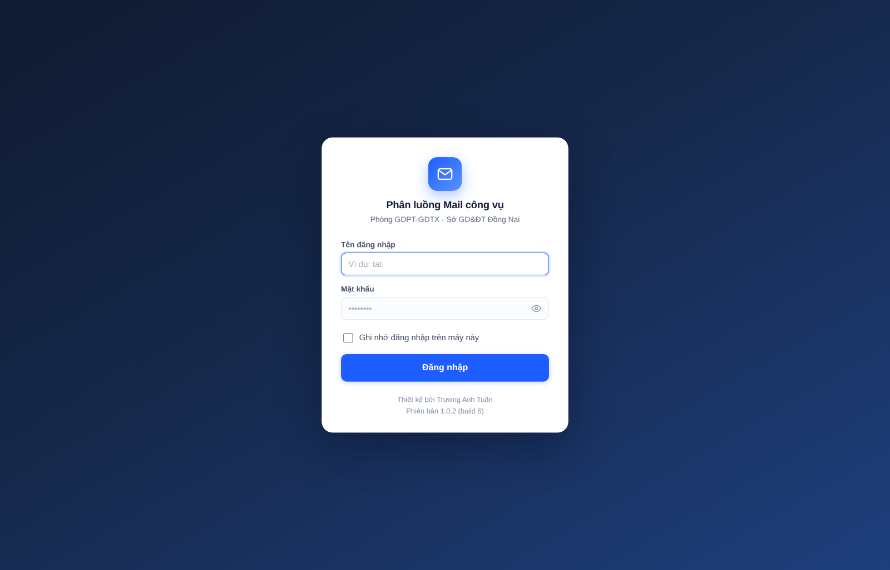
tat)Bấm biểu tượng con mắt bên phải ô mật khẩu để xem lại mật khẩu vừa gõ, phòng khi gõ nhầm.
Lưu ý an toàn: không tích "Ghi nhớ đăng nhập" trên máy dùng chung. Xong việc nhớ bấm đăng xuất ở góc dưới bên trái.
Đây là màn hình bạn dùng nhiều nhất. Nó chỉ hiện những văn bản được giao cho riêng bạn — không thấy việc của người khác, và người khác cũng không thấy việc của bạn.
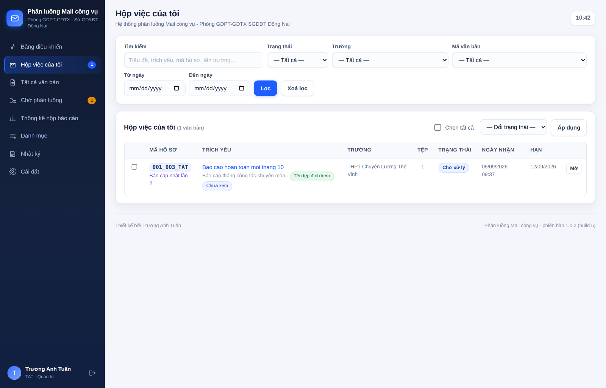
Mỗi dòng cho biết:
| Cột | Ý nghĩa |
|---|---|
| Trường | Trường nào gửi |
| Văn bản | Loại báo cáo / công việc |
| Tiêu đề | Tiêu đề bức thư gốc |
| Tệp | Số tệp đính kèm |
| Ngày nhận | Giờ Việt Nam |
| Trạng thái | Chờ xử lý · Đang xử lý · Đã xử lý |
Con số màu cam cạnh chữ "Hộp việc của tôi" ở thanh bên trái là số việc chưa xử lý. Nhìn con số đó là biết ngay còn bao nhiêu việc đang chờ.
Dùng thanh lọc phía trên để tìm nhanh theo trường, theo loại văn bản, theo trạng thái, hoặc theo khoảng ngày.
Bấm vào một dòng bất kỳ để mở trang chi tiết:
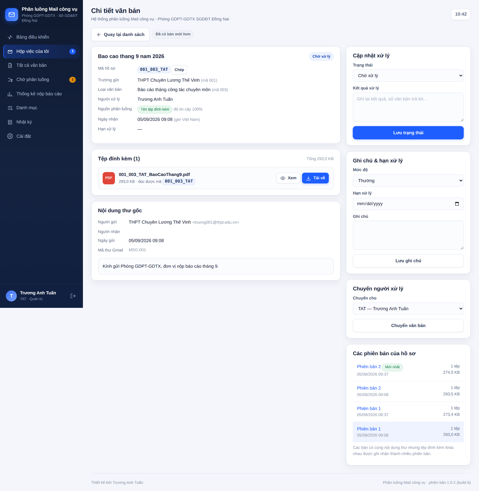
Trang này có đủ mọi thứ về bức thư:
Xử lý xong, bấm nút Đánh dấu đã xử lý. Muốn ghi lại điều gì cho người sau đọc thì gõ vào ô ghi chú trước khi bấm.
Nếu thấy nhãn "Bản cập nhật lần 2" thì nghĩa là trường đã sửa tệp rồi gửi lại. Hệ thống hiển thị bản mới nhất trước, nhưng bản cũ vẫn còn nguyên để bạn đối chiếu khi cần.
Bấm vào tên bạn ở góc dưới bên trái để vào trang hồ sơ:
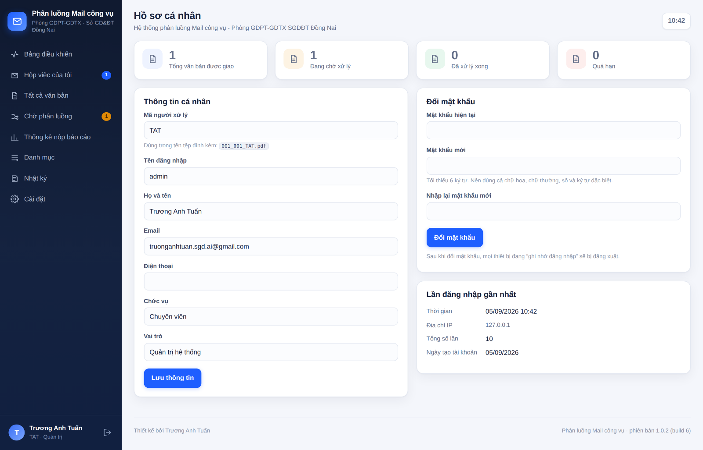
Ở đây bạn:
Đăng nhập bằng tài khoản quản trị, màn hình đầu tiên là bảng điều khiển:
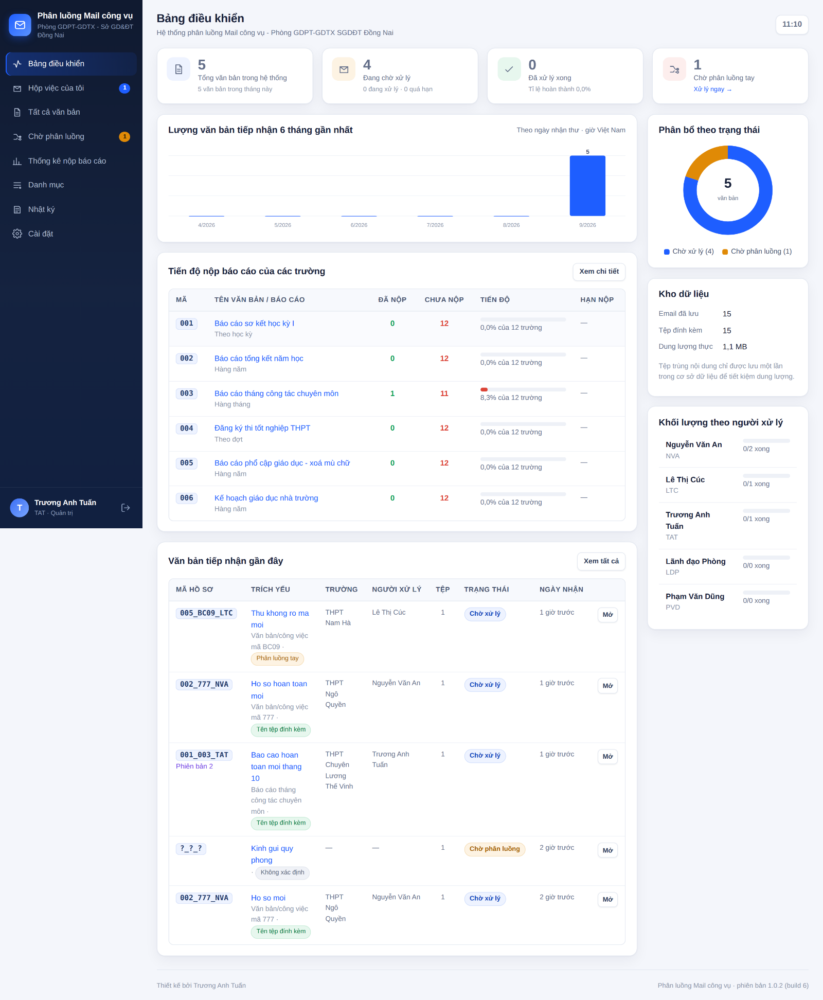
Bốn thẻ trên cùng cho biết nhanh: tổng số văn bản, số việc đang chờ xử lý, số việc chờ phân luồng tay, và số trường đã nộp trong kỳ.
Bên dưới là biểu đồ tròn phân bố theo trạng thái, biểu đồ cột theo từng người xử lý, và danh sách văn bản mới nhận gần nhất.
Việc nên làm mỗi ngày: nhìn con số "Chờ phân luồng". Nếu lớn hơn 0 thì vào xử lý ngay, vì những việc đó chưa được tính vào thống kê nộp báo cáo.
Đây là nơi chứa những bức thư mà hệ thống không đọc được mã — thường vì trường đặt tên tệp không theo quy ước.
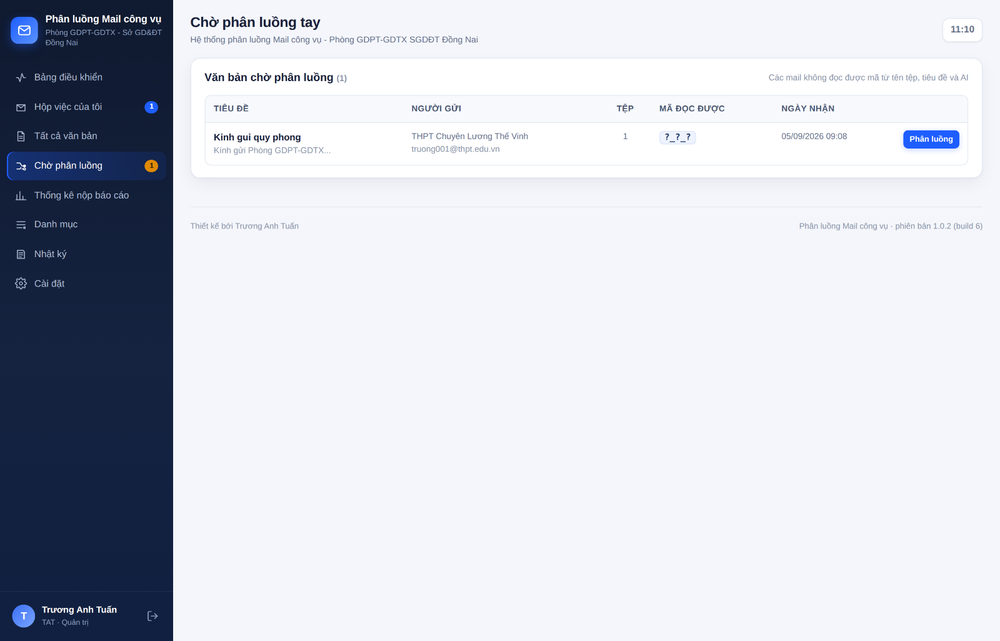
Bấm nút Phân luồng ở cuối dòng để mở biểu mẫu:
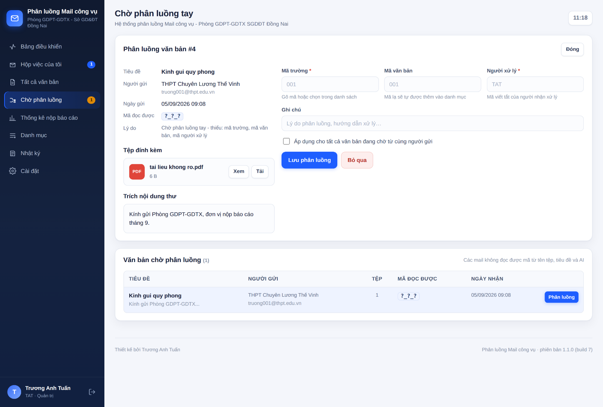
Bên trái là nội dung thư và danh sách tệp đính kèm để bạn xem trước khi quyết định; bên phải là ba ô cần điền:
| Ô | Bắt buộc | Cách điền |
|---|---|---|
| Mã trường | Có | Gõ mã, hoặc bấm mũi tên chọn trong danh sách |
| Mã văn bản | Không | Mã lạ sẽ tự được thêm vào danh mục |
| Người xử lý | Có | Mã viết tắt của cán bộ nhận việc |
Có thêm hai lựa chọn hữu ích:
Bấm Lưu phân luồng là xong. Văn bản lập tức xuất hiện trong hộp việc của người được chọn.
Nếu đó là thư rác hoặc thư không liên quan, bấm Bỏ qua.
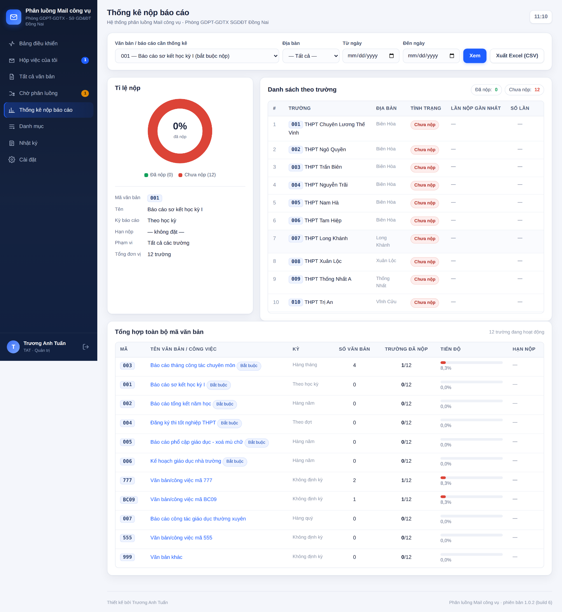
Chọn loại văn bản cần theo dõi, chọn khoảng thời gian, bấm Xem. Hệ thống liệt kê rõ:
Bấm Xuất CSV để tải danh sách về, mở bằng Excel rồi gửi công văn nhắc nhở.
Cần nhớ: trường được tính là "đã nộp" ngay khi văn bản vào hệ thống, không phải đợi cán bộ xử lý xong. Vì vậy hãy dọn sạch hàng chờ phân luồng trước khi chốt số liệu.
Hệ thống có ba danh mục, chuyển qua lại bằng ba nút ở đầu trang.
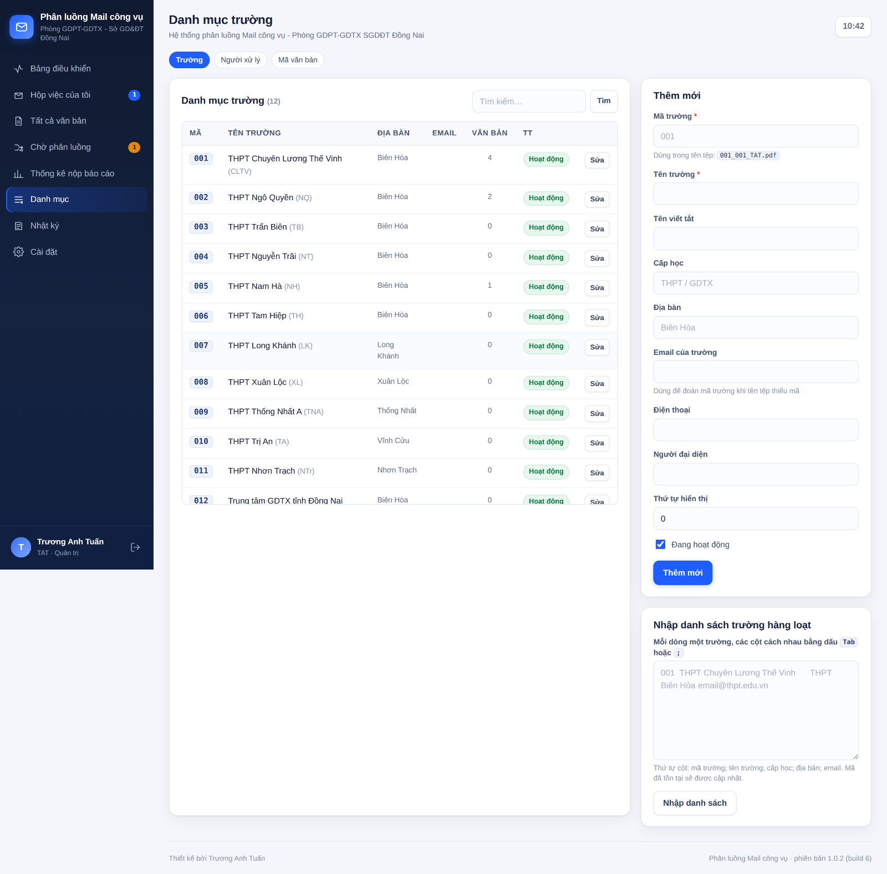
Đây là danh mục bắt buộc — không có mã trường trong danh mục thì hệ thống không phân luồng tự động được.
| Trường thông tin | Ghi chú |
|---|---|
| Mã trường | Phần đầu trong tên tệp. Nên dùng 3 chữ số: 001, 002… |
| Tên trường | Tên đầy đủ |
| Tên viết tắt | Hiện gọn trong bảng danh sách |
| Cấp học, địa bàn | Dùng để lọc trong thống kê |
| Email của trường | Rất nên điền — giúp đoán mã trường khi tên tệp thiếu mã |
Khi mới triển khai, dùng ô Nhập danh sách trường hàng loạt ở cột phải: chép từ Excel dán thẳng vào, mỗi dòng một trường, các cột cách nhau bằng Tab. Thứ tự cột là mã trường; tên trường; cấp học; địa bàn; email. Mã đã tồn tại sẽ được cập nhật chứ không bị nhân đôi.
Đây vừa là danh mục cán bộ, vừa là nơi tạo tài khoản đăng nhập.
| Trường thông tin | Ghi chú |
|---|---|
| Mã người xử lý | Phần cuối trong tên tệp, ví dụ TAT |
| Bí danh khác | Các cách viết tắt khác, cách nhau bằng dấu phẩy |
| Họ và tên | |
| Tên đăng nhập | Dùng để đăng nhập web |
| Mật khẩu | Để trống khi sửa nghĩa là giữ mật khẩu cũ |
| Vai trò | Người xử lý · Quản trị · Lãnh đạo |
Ô Bí danh khác rất đáng dùng. Nếu các trường hay gõ nhầm T.A.TUAN, TUAN, TATUAN thay vì TAT, cứ thêm hết vào bí danh — hệ thống sẽ nhận tất.
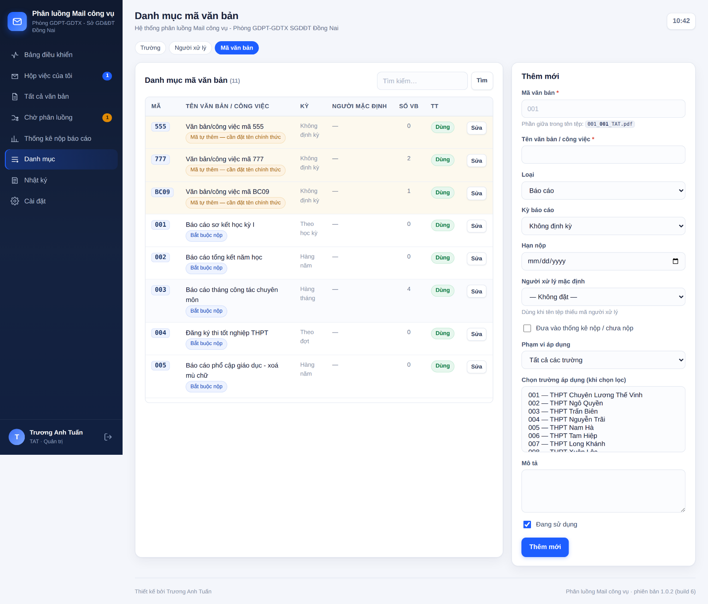
Đây là danh mục được nới lỏng có chủ ý. Những dòng có nền vàng và nhãn "Mã tự thêm — cần đặt tên chính thức" là mã mà hệ thống gặp trong thực tế nhưng chưa có trong danh mục.
Nó vẫn hiện, vẫn được đếm vào thống kê, chỉ chờ bạn bấm Sửa rồi đặt tên chính thức.
Các thiết lập đáng chú ý:
Mọi việc hệ thống làm đều được ghi lại: ai đăng nhập lúc nào, bộ nhận mail chạy phiên nào, văn bản nào được phân luồng cho ai, ai sửa danh mục.
Bốn thẻ trên cùng đếm số dòng theo từng mức: Thông tin, Cảnh báo, Lỗi, Gỡ lỗi. Bấm "Chỉ xem mức này" để lọc nhanh.
Khi có sự cố, cách tra nhanh nhất là bấm vào thẻ Lỗi rồi đọc từ trên xuống.
Bấm Dọn nhật ký cũ để xoá các dòng cũ hơn số ngày đã cấu hình trong Cài đặt.
Trang Cài đặt chia thành sáu nhóm.
Đổi tên ứng dụng, tên đơn vị, dòng bản quyền ở chân trang, màu chủ đạo, và đường dẫn logo.
Mặc định:
_, -, . và khoảng trắng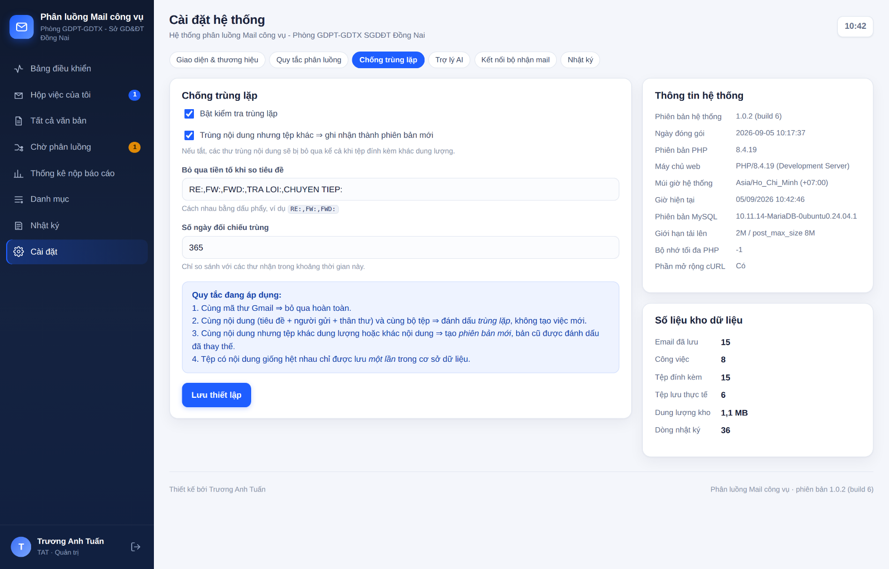
RE:,FW:,FWD:Xem chi tiết ở mục 9 của tài liệu kỹ thuật. Sau khi điền, bấm Kiểm tra kết nối AI để thử ngay.
Nơi lấy khoá API để dán vào bộ nhận mail khi chạy ở chế độ Qua API PHP. Cũng đặt được kích thước mỗi khối tải lên — giảm xuống nếu hosting giới hạn post_max_size nhỏ.
Chọn mức ghi tối thiểu và số ngày giữ nhật ký. Đặt 0 ngày để giữ mãi.
Bộ nhận mail chạy trên máy nhà hoặc VPS, không chạy trên hosting.
Trên Windows: giải nén tệp zip, nhấp đúp mailrouter.exe. Trình duyệt tự mở giao diện điều khiển.
Trên Linux:
tar -xzf mailrouter-linux-x64-v1.0.2.tar.gz
cd mailrouter-linux-x64
./mailrouter giao-dienRồi mở trình duyệt vào http://127.0.0.1:8899.
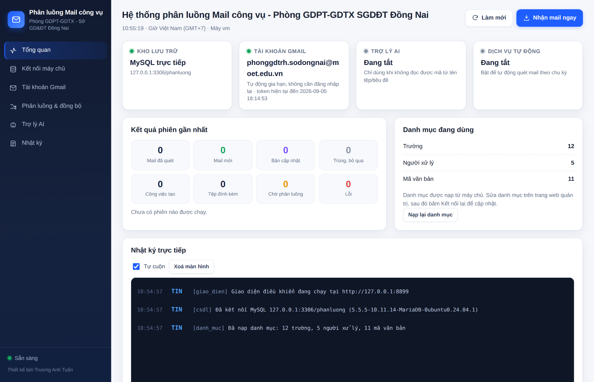
Màn hình Tổng quan cho biết ngay bốn điều: kho lưu trữ đã kết nối chưa, Gmail đã đăng nhập chưa, trợ lý AI bật hay tắt, và dịch vụ tự động có đang chạy không. Chấm tròn màu xanh là tốt, màu xám là chưa bật.
Bảng Nhật ký trực tiếp ở dưới cùng chạy theo thời gian thực — rất tiện để theo dõi khi đang đồng bộ.
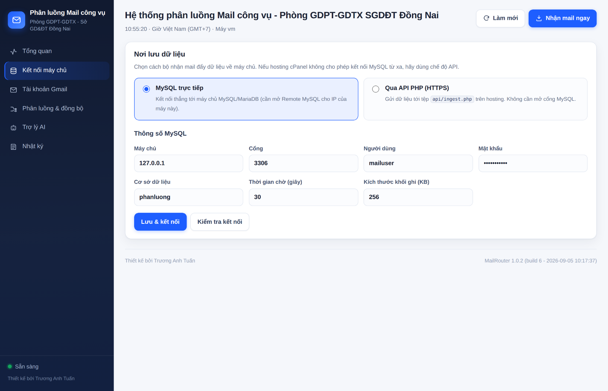
Chọn một trong hai cách:
Cách A — MySQL trực tiếp. Điền máy chủ, cổng, tên đăng nhập, mật khẩu, tên cơ sở dữ liệu đúng như cPanel cấp. Nhớ vào cPanel → MySQL Databases → Remote MySQL thêm IP máy của bạn vào danh sách cho phép.
Cách B — Qua API PHP. Điền địa chỉ web và khoá API lấy từ Cài đặt → Kết nối bộ nhận mail của trang web. Cách này dễ hơn nhiều với hosting phổ thông và với đường truyền IP động ở nhà.
Bấm Kiểm tra kết nối để thử trước khi lưu.
Gặp lỗiTable ... doesn't exist? Nghĩa là kết nối đã thông nhưng cơ sở dữ liệu còn rỗng. Hãy chạycai-dat.phptrên hosting trước để tạo bảng. Xem mục 17.
Hai cách, chọn cách nào cũng được:
Cách 1 — Có Client ID. Dán Client ID và Client Secret lấy từ Google Cloud Console (xem hướng dẫn lấy), bấm Đăng nhập Google. Trình duyệt mở trang cấp quyền của Google, bạn chọn hộp thư công vụ và bấm đồng ý. Xong.
Cách 2 — Đã có sẵn token. Dán thẳng access_token và refresh_token vào, bấm lưu.
Không, miễn là có refresh token. Hãy nhìn dòng Gia hạn trên màn hình:
Access token của Google chỉ sống khoảng một giờ, nhưng hệ thống tự đổi lấy token mới trước khi hết hạn, và lưu lại vào tệp cấu hình. Bạn không phải làm gì cả.
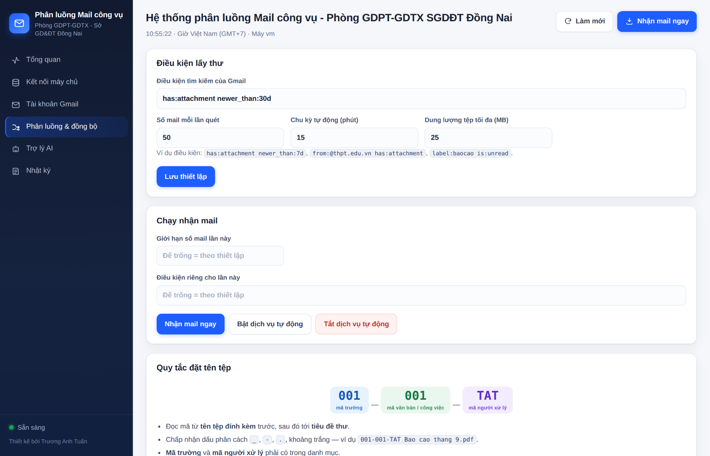
Chạy thủ công: bấm nút Nhận mail ngay ở góc trên bên phải. Theo dõi tiến trình ở bảng nhật ký trực tiếp.
Chạy tự động: bật Dịch vụ tự động và đặt chu kỳ (ví dụ 15 phút). Bộ nhận mail sẽ tự quét theo chu kỳ đó, chỉ cần để cửa sổ chạy nền.
Truy vấn Gmail mặc định là has:attachment newer_than:30d — chỉ lấy thư có tệp đính kèm trong 30 ngày gần nhất. Sửa được nếu cần, dùng đúng cú pháp tìm kiếm của Gmail.
Quét cả hộp Thư rác (Spam) — nên để bật. Google hay xếp nhầm báo cáo của các trường vào Thư rác; tắt mục này là bỏ sót, và thống kê sẽ báo "chưa nộp" oan cho trường đã gửi. Thư trong Thùng rác thì hệ thống luôn bỏ qua, vì đó là thư ai đó đã chủ động xoá.
Thư vớt được từ Thư rác hiện huy hiệu vàng "Hộp Thư rác" ở trang chi tiết và trang phân luồng tay, và được đếm riêng trong kết quả mỗi phiên.
Kết thúc mỗi phiên, hệ thống báo lại tám con số: mail đã quét, mail mới, bản cập nhật, trùng bị bỏ qua, công việc tạo, tệp đính kèm, chờ phân luồng, và lỗi.
Trên Linux — dùng tệp mailrouter.service có sẵn trong gói:
sudo cp mailrouter.service /etc/systemd/system/
sudo systemctl enable --now mailrouterTrên Windows — dùng Task Scheduler, đặt lệnh chạy mailrouter.exe dich-vu lúc khởi động máy.
Phần này nên trích ra gửi kèm công văn hướng dẫn cho các trường.
Khi gửi báo cáo về Phòng, hãy đặt tên tệp đính kèm theo mẫu:
<mã trường>_<mã văn bản>_<mã người xử lý>.<đuôi tệp>Ví dụ: 001_003_TAT.pdf nghĩa là trường 001 nộp văn bản 003, chuyển cho cán bộ TAT.
Ba điều cần nhớ:
Được chấp nhận:
| Tên tệp | Vì sao được |
|---|---|
001_001_TAT.pdf | Chuẩn nhất |
001-003-NVA.docx | Dùng dấu gạch ngang cũng được |
005 002 LTC.xlsx | Dùng khoảng trắng cũng được |
BC_001_BC09_TAT.pdf | Có chữ phía trước vẫn được |
Không đọc được — sẽ chậm vì phải chuyển tay:
| Tên tệp | Vì sao không được |
|---|---|
tai lieu khong ro.pdf | Không có mã nào |
Bao cao thang 9.docx | Toàn chữ |
scan_0001.pdf | Chỉ có một con số |
999_001_TAT.pdf | Mã trường 999 không có trong danh mục |
Nếu không đặt tên tệp được (ví dụ gửi từ điện thoại), hãy ghi mã vào tiêu đề thư — hệ thống cũng đọc được từ đó.
Gửi nhầm rồi gửi lại có sao không? Không sao cả. Gửi lại y hệt thì hệ thống nhận ra và bỏ qua. Sửa tệp rồi gửi lại thì hệ thống lưu thành bản cập nhật, cán bộ sẽ thấy bản mới nhất.
| Hiện tượng | Nguyên nhân | Cách xử lý |
|---|---|---|
Table '...cau_hinh' doesn't exist | Chưa chạy trình cài đặt, CSDL còn rỗng | Mở https://tên-miền/cai-dat.php chạy hết 4 bước, rồi xoá tệp cai-dat.php đi |
Cơ sở dữ liệu được tạo từ phiên bản cũ, còn thiếu … cột | Nâng cấp mã nguồn nhưng chưa nâng cấp CSDL | Mở https://tên-miền/nang-cap.php, bấm Nâng cấp ngay, rồi xoá tệp nang-cap.php đi. Dữ liệu cũ giữ nguyên |
| Trường khẳng định đã gửi mà hệ thống không thấy | Thư rơi vào Thư rác, hoặc mục Quét cả hộp Thư rác đang tắt | Bật lại mục đó trong Phân luồng & đồng bộ, chạy đồng bộ lại; sau đó tạo bộ lọc Gmail “không bao giờ chuyển vào Thư rác” cho tên miền các trường |
Access denied for user | Sai tài khoản MySQL, hoặc chưa mở Remote MySQL | Kiểm tra lại thông tin trong cPanel; hoặc chuyển sang chế độ Qua API PHP |
| Kết nối MySQL bị từ chối từ máy nhà | Hosting chặn MySQL từ xa, hoặc IP nhà đã đổi | Chuyển sang chế độ Qua API PHP — cách này không phụ thuộc IP |
| Dòng "Gia hạn" hiện chữ đỏ | Chỉ có access token, thiếu refresh token | Đăng nhập lại bằng Client ID để lấy refresh token |
Đồng bộ báo 401 liên tục | Token bị thu hồi, hoặc đổi mật khẩu Gmail | Đăng nhập lại Gmail trong bộ nhận mail |
| Nhiều mail vào hàng chờ phân luồng | Các trường đặt tên tệp sai quy ước | Gửi lại hướng dẫn ở mục 16; cân nhắc bật trợ lý AI |
| Tải tệp lớn bị lỗi giữa chừng | post_max_size của hosting nhỏ | Giảm kích thước khối trong Cài đặt → Kết nối bộ nhận mail |
| Thống kê thiếu trường | Còn việc kẹt ở hàng chờ phân luồng | Dọn hết hàng chờ rồi xem lại |
| Giao diện hiển thị sai sau khi nâng cấp | Trình duyệt còn giữ tệp CSS cũ | Không cần làm gì — số phiên bản nằm trong đường dẫn CSS nên trình duyệt tự tải mới |
Khi không rõ nguyên nhân, vào Nhật ký hệ thống, bấm thẻ Lỗi, đọc dòng mới nhất.
Hệ thống có xoá mail trong hộp thư không? Không. Hệ thống chỉ xin quyền đọc (gmail.readonly), Google sẽ từ chối mọi lệnh xoá hoặc sửa nhãn. Hộp thư công vụ nguyên vẹn.
Trường có gửi mà thư rơi vào Thư rác thì sao? Hệ thống vẫn lấy được. Mỗi phiên đồng bộ quét hai lượt: hộp thư chính rồi tới hộp Thư rác. Thư vớt được hiện huy hiệu vàng "Hộp Thư rác" để bạn biết.
Nhưng nên xử lý tận gốc, đừng để lặp lại: vào Gmail → Cài đặt → Bộ lọc và địa chỉ bị chặn → Tạo bộ lọc mới, ô Từ điền tên miền của các trường (ví dụ @thpt.edu.vn), bấm Tạo bộ lọc, rồi tích “Không bao giờ chuyển vào Thư rác”. Dùng Google Workspace thì quản trị viên làm một lần cho cả cơ quan ở Admin console → Apps → Gmail → Spam, Phishing and Malware → Allowlist.
Thư đã xoá vào Thùng rác có bị lấy lại không? Không. Thùng rác luôn được bỏ qua — đã chủ động xoá thì hệ thống tôn trọng quyết định đó.
Bộ nhận mail phải bật 24/24 không? Không bắt buộc. Tắt máy vài ngày rồi bật lại, hệ thống sẽ lấy bù những mail chưa đọc (trong phạm vi truy vấn Gmail — mặc định là 30 ngày gần nhất).
Một mail kèm nhiều tệp của nhiều trường thì sao? Hệ thống đọc mã trên từng tệp, nên sẽ tạo ra nhiều công việc riêng cho nhiều người xử lý riêng. Đây là tình huống đã được tính tới.
Cùng một công văn được 12 trường gửi kèm lại thì có tốn 12 lần dung lượng không? Không. Tệp có nội dung giống hệt nhau chỉ được lưu một bản trong cơ sở dữ liệu, dù tên tệp khác nhau hay do trường khác nhau gửi.
Không bật trợ lý AI thì có dùng được không? Được đầy đủ. AI chỉ là lớp hỗ trợ thêm cho những mail khó đọc; không bật thì các mail đó vào hàng chờ phân luồng tay để quản trị xử lý.
Đổi mật khẩu cho người quên mật khẩu thế nào? Quản trị vào Danh mục → Người xử lý, bấm Sửa người đó, gõ mật khẩu mới vào ô Mật khẩu rồi lưu. Để trống ô đó nghĩa là giữ nguyên mật khẩu cũ.
Có xem được số liệu trên điện thoại không? Được. Giao diện web tự co giãn theo màn hình, dùng tốt trên điện thoại và máy tính bảng.
Sao lưu dữ liệu thế nào? Vào cPanel → phpMyAdmin → chọn cơ sở dữ liệu → Export. Một tệp .sql là đủ cả dữ liệu lẫn tệp đính kèm, vì tệp được lưu ngay trong cơ sở dữ liệu.
| Tài liệu | Nội dung |
|---|---|
| Quy trình kỹ thuật | Hệ thống hoạt động thế nào ở mức kỹ thuật |
| Cài đặt web trên cPanel | Từng bước đưa web lên hosting |
| Cài đặt bộ nhận mail | Chạy trên máy nhà / VPS |
| Lấy Client ID Gmail | Thao tác trên Google Cloud Console |
| Kiến trúc hệ thống | Dành cho người sửa mã nguồn |